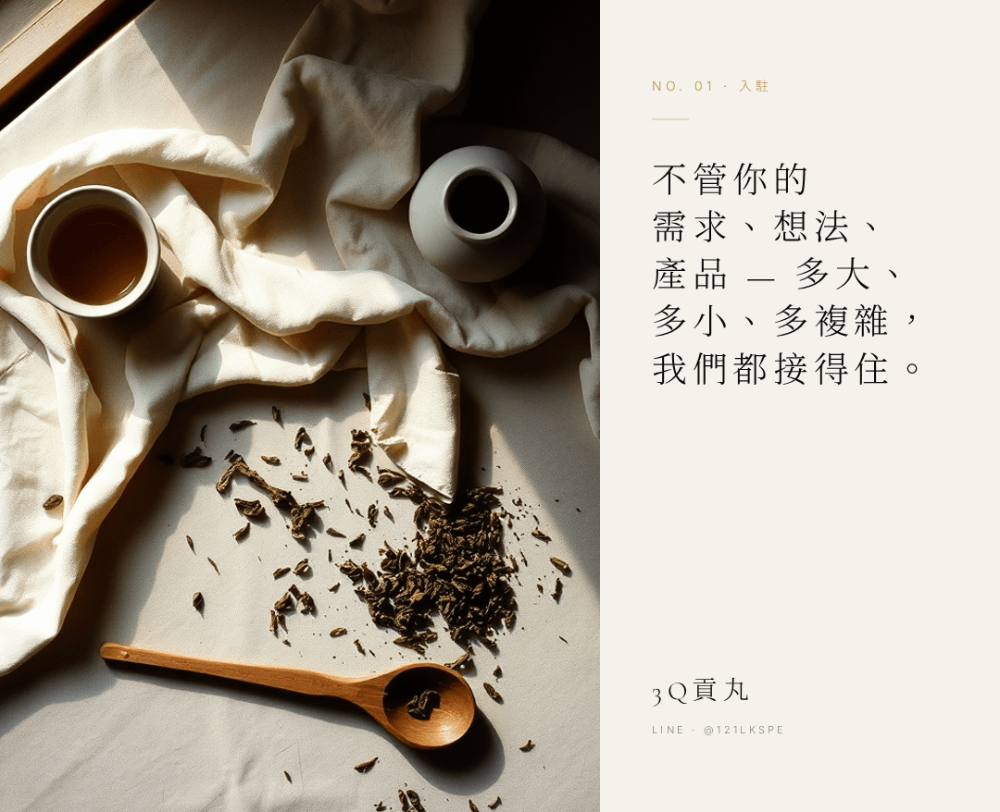
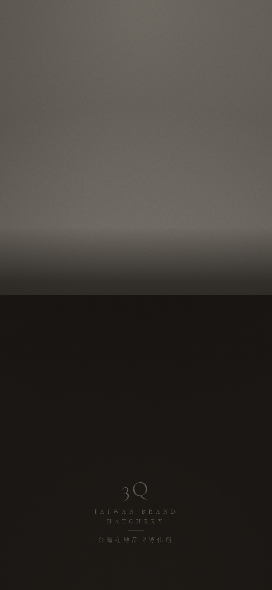

01 / 04
Avatar
大頭照
下載 PNG
milk790-code.github.io/3q-hatchery-line-oa/assets/exports/3q-avatar-640.png
- 開
manager.line.biz → 選 OA「3Q貢丸 · 台灣在地品牌孵化所」
- 左側 →
設定 → 帳號設定 → 基本檔案
- 「相片 / 大頭貼」區塊 →
編輯 按鈕
- 選剛下載的
3q-avatar-640.png → 儲存
02 / 04
Cover Photo
封面照片

1080 × 878 · PNG · 859 KB
下載 PNG
milk790-code.github.io/3q-hatchery-line-oa/assets/exports/3q-cover-bowl-1080x878.png
- 承上頁，基本檔案頁面往下捲
- 「封面照片」區塊 →
編輯
- 選
3q-cover-bowl-1080x878.png
- 確認上方 150px 區域不會擋到關鍵內容 →
儲存
03 / 04
Chat Background
聊天室背景

1080 × 2340 · JPEG · 84 KB
下載 JPEG
milk790-code.github.io/3q-hatchery-line-oa/assets/exports/3q-chat-bg-1080x2340.jpg
- 左側 →
設定 → 聊天室（或「聊天設定」）
- 「聊天室背景」/「對話畫面」區塊 →
上傳
- 選
3q-chat-bg-1080x2340.jpg
- 確認預覽訊息泡泡仍清楚可讀 →
儲存
04 / 04
Toggle Off Defaults
關閉 LINE 內建自動回應與歡迎訊息
LINE 預設的「自動回應」跟「歡迎訊息」會搶在 Webhook 之前回覆使用者，蓋掉我們設計好的客製訊息。
兩個都關掉，讓 Cloudflare Worker 接管所有對話。
- 左側 →
自動回應 → 頂部 toggle 切「停用」
- 左側 →
加入好友的歡迎訊息 → toggle 切「停用」
- 部分版本把這兩個放在
設定 → 回應設定 底下，找不到時往那邊翻
- 確認頁面狀態顯示「目前狀態：停用」（不是「啟用中」）
VERIFY
Self-test
上線前驗收 · 用您的手機
打開 LINE app → 搜尋 @121LKSPE → 加好友 → 對照下列檢查：
- 大頭照是 3Q 字樣的圓形
- 點頭像進個人頁，看得到封面（碗 + 米）
- 個人頁有「孵化所」介紹文字
- 進對話 → 聊天背景是深色 + 碗的攝影漸層
- 剛加好友收到歡迎卡圖片
- 歡迎卡後收到一段歡迎文字
- 對話框底部有 Rich Menu（1 條橫幅 + 4 格）
- 點橫幅 → 開啟 3q-hatchery.tw 網站
- 點「說說你的店」格子 → 觸發訊息
- 打「好物」→ 收到 好物・好照 介紹
- 打「客製」→ 收到客製行銷介紹
- 打「進度」→ 收到進度查詢回覆
- 打「實例」→ 文字 + 4 張輪播卡
- 打「諮詢」→ 預約回覆
- 打亂碼 → 收到 24h 回覆承諾的 away 訊息
- 沒看到 LINE 預設的「歡迎您加入！」訊息（代表關 OK）
{kind=link}
{kind=link}
{kind=link}